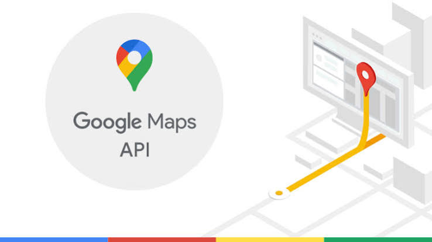
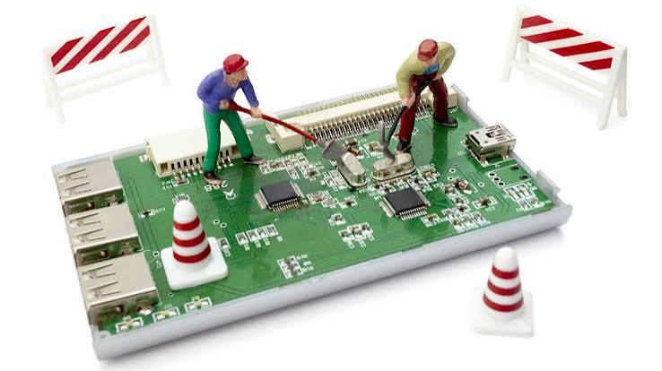

Green TI - E-commerce Verde e Minimalista
Desenvolvimento de uma plataforma de e-commerce simples, rápida e ecológica para a Startup. O projeto adota os princípios de Web Design Sustentável e TI Verde, garantindo uma experiência de compra ultra-rápida, baixo custo de manutenção e impacto ambiental reduzido (baixa pegada de carbono por página carregada).

Algoritmos de Rotas Eco-eficientes
Desenvolver uma plataforma de e-commerce minimalista e inteligente para a Startup, projetada sob a filosofia de sustentabilidade digital e física. O foco é criar um modelo de negócio escalável com baixíssimo custo operacional e impacto ambiental reduzido, desde o primeiro clique do cliente até a entrega do produto em sua porta.

Plataforma de Refurbished (Recondicionamento)
Desenvolver uma plataforma de e-commerce e captação especializada na venda e recondicionamento de eletrônicos, baseada no conceito de Economia Circular. O projeto visa democratizar o acesso à tecnologia de ponta, oferecendo dispositivos revisados com garantia e preços acessíveis, ao mesmo tempo em que reduz o descarte de lixo eletrônico (e-waste).